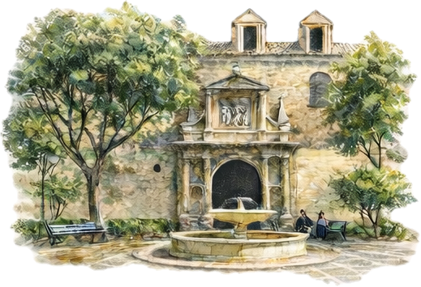
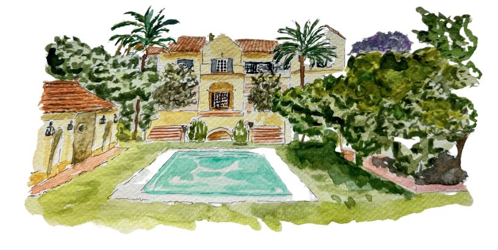

Galería de fotos

Todo comenzó un 25 de octubre de hace cuatro años, lo de casarnos el mismo día un tiempo después, fue pura casualidad, aunque bendita casualidad.
Volviendo al principio, ese 25 de octubre los dos estábamos en el mismo lugar sin saberlo y gracias a las chivatas de las redes sociales, lo supimos.
Otra bonita casualidad que aprovechamos para no parar de hablar durante horas a través de la pantalla.
Empezamos a notar esto que pasa pocas veces en la vida, cuando sientes que con la otra persona todo sale de forma natural, que es sencillo, que estás cómodo, que no te importaría no dormir en toda la noche porque estás donde quieres estar... Naturalidad, sencillez y espontaneidad son cualidades que nos definen y que resumen nuestra forma de vida. Nosotros somos disfrutones por naturaleza y tras esos días de primeras confidencias y encuentros, descubrimos que juntos lo éramos aún más.
Disfrutar del momento es nuestro mantra, ya sea de botellines por la Alameda, cenas en restaurantes de ensueño, viajes y escapadas, música en directo y conciertos, sofá y series, ratitos con amigos, momentos en familia, paseos y picnics por la playita...
Nos detenemos aquí porque justo uno de esos picnics fue el momento elegido por Migue (después de varios meses paseando el anillo de pedida) para pedirle matrimonio a Pili.
El lugar era el perfecto, la playa en la que ella había pasado los mejores años de su vida junto a su familia, en la que creció y en donde siente más presente, aún si cabe, a su padre. Porque fue él el que más disfrutó de esos días de verano eternos que ojalá volvieran.
Este lugar se ha convertido ahora en un bonito refugio de paz y relax para nosotros.
No podemos terminar nuestra historia sin una especial mención a Marta, hermana de la novia, que fue la que nos puso en un mismo camino para que nosotros pudiéramos elegir una misma dirección 💚 Como dato curioso, fue una bonita forma de devolverle el favor a la novia, porque ella le presentó a su marido hace ya unos cuantos años.
Y en este nuevo día, por supuesto volveremos a mirar al cielo. Tristemente esta vez, sumando un nuevo abrazo y un beso más de los que ya mandamos el día 25.10.2025. Estamos seguros, que desde arriba estarán brindando por aquellos que estemos bailando abajo.
Teniendo en cuenta todo lo ocurrido y el cariño transmitido todo esto tiempo, así como las fuerzas y ánimos transmitidos para hacerlo, teníamos que compartir con todos vosotros un momento bonito y un recuerdo de cariño y unión.
Así que hacedlo por nosotros, ya que lo que más felices nos hace es compartir y devolver ese cariño mostrado en los duros momentos, ya que está comprobado que los malos llegan solos y cuando menos los esperas.
Iglesia: Convento Santa Isabel
Hora: 12:30 h

Dirección: Pl. Sta. Isabel, 4, Casco Antiguo, 41003 Sevilla
Lugar: BellaSombra House
Hora: 14:30 h

Dirección: Urb. Roalcao, 9, 41807 Espartinas, SevillaEntrada de invitados y parking por calle Sta. María
Horarios de autobús (ida): 13:45 h
Horarios de autobús (vuelta aproximados):
21:00 h o 22:00 h y 1:30 h.
Estimación de precio en transporte privado desde el convento a BellaSombra:
25€ - 30€
Queremos que te sientas cómodo/a, aunque la novia va de blanco y novio de chaqué. ¡Aviso a navegantes! El cocktail será sobre césped, aunque es un terreno bastante cómodo para andar y bailar; pero creemos que esta información es de interés para las mujeres ;).
Por favor, confirma tu asistencia antes del 15 de marzo.
¿Puedo llevar acompañante?
Sí, pasale el enlace para que se registre tambíen o hazlo tu mismo a través del formulario y avisanos si no lo teníamos previsto.
¿Hay opciones para alérgenos?
Sí, coméntanoslo en el formulario.
¿Dónde aparcar?
En la calle Sta. María(Espartinas) será dónde se pueda aparcar, que es dónde está ubicada la entrada de invitados. Allí además habrá personal de la hacienda preparado para indicar donde aparcar.
¿Van niños a la boda?
No, esta será una celebración sólo para adultos, asi que tomaos este ratito para vosotros y disfrutad con nosotros